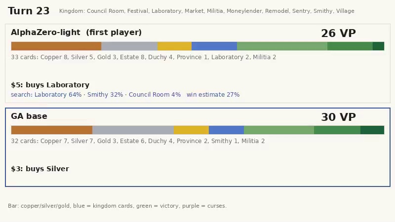

How it sees
At every buy the network gets 175 numbers, all from the point of view of the player who is buying, and only things that player could know at a real table: what each player owns is public (every buy and gain is seen), and your own draw pile's contents are known even though its order is not. Nothing about the order of any deck or the opponent's hand goes in.
| inputs | count | meaning (scaled) |
|---|---|---|
| my cards | 33 | how many of each card I own, all zones (÷ 10) |
| my draw pile | 33 | how many of each card are still in my draw pile, i.e. what my next hands come from (÷ 10) |
| their cards | 33 | how many of each card the opponent owns (÷ 10) |
| supply | 33 | cards left in each pile (÷ 10) |
| in this game | 33 | 1 if the card is in this kingdom / supply |
| this turn | 2 | coins (÷ 8) and buys left (÷ 2) |
| clock | 2 | my turns and their turns played (÷ 20) |
| score | 3 | my VP, their VP, the difference |
| ending | 2 | Provinces left (÷ 8), empty supply piles (÷ 3) |
| seat | 1 | 1 if I am the first player (ties go to the player with fewer turns) |
The same 175 numbers are computed inside the search for every leaf, from the point of view of whoever is buying there (me or the opponent), in a determinized copy of the game. A leaf's features can mention the opponent's hand only through "coins this turn" when the opponent is the buyer, and that hand was dealt at random by the determinization, not taken from the real game.
What the search sees that the net doesn't
The search plays real games forward in the engine, so it sees exact consequences: reshuffle timing, Witch curses landing, piles running out. That's why the search is stronger than the net alone, and why the net is trained to imitate the search.
An example frame
From the Play tab: each frame is one buy decision. The bar shows each deck's composition. For a searching player the blue line shows how the 400 simulations were split and the search's estimate of its win chance.
